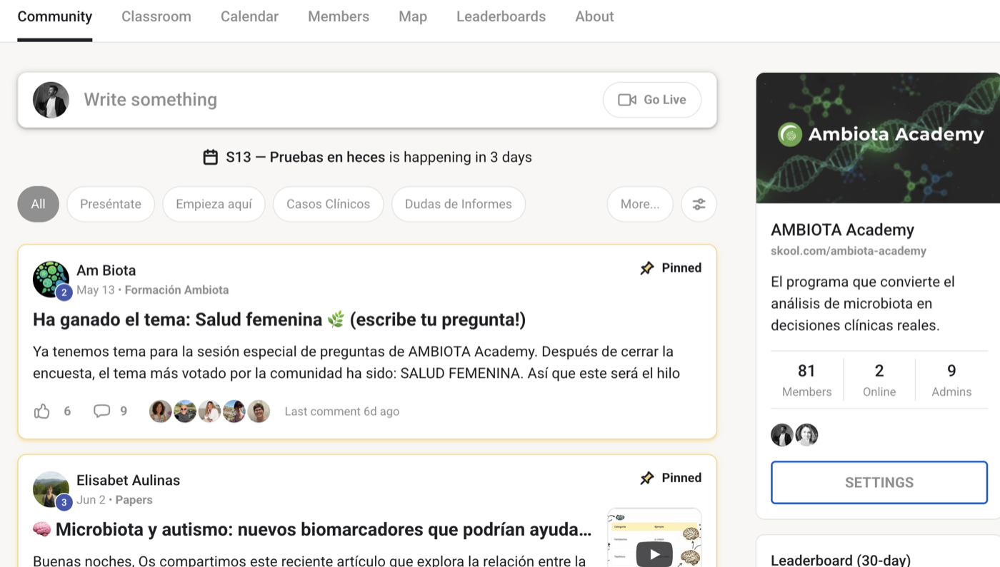
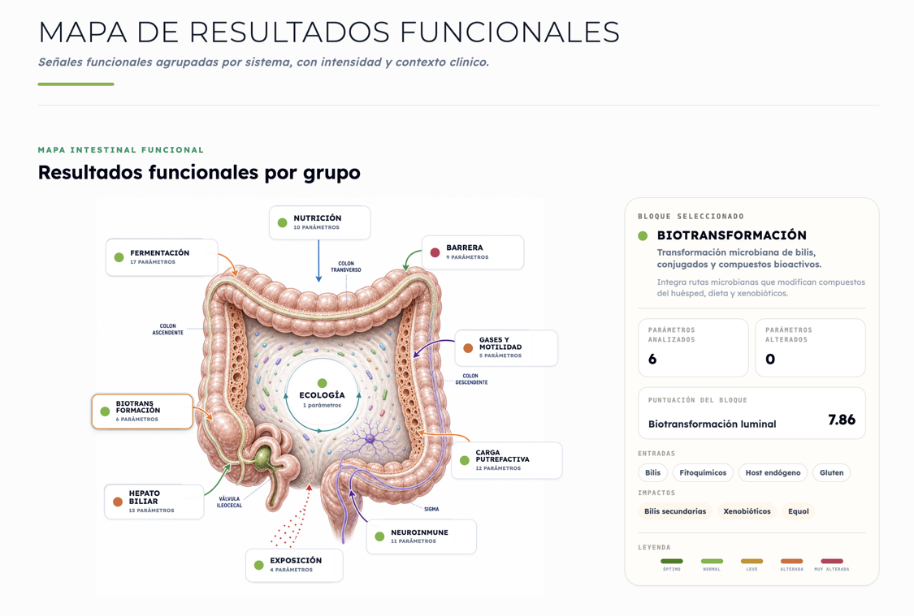
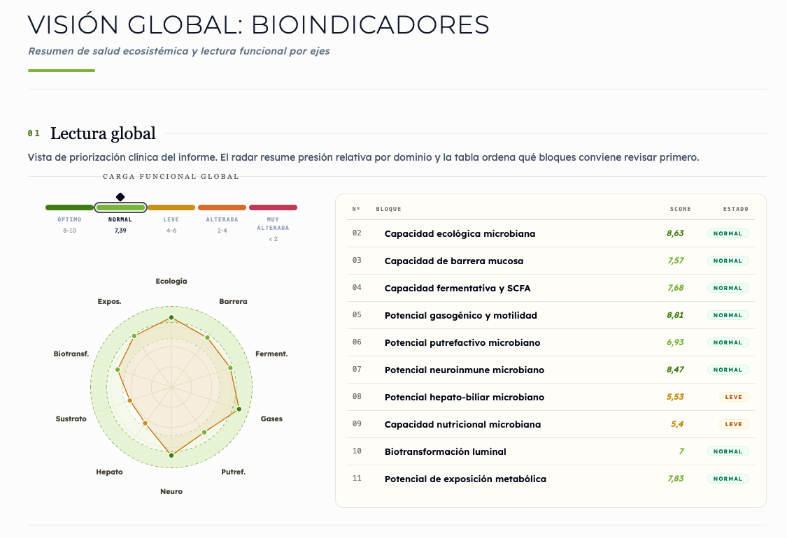
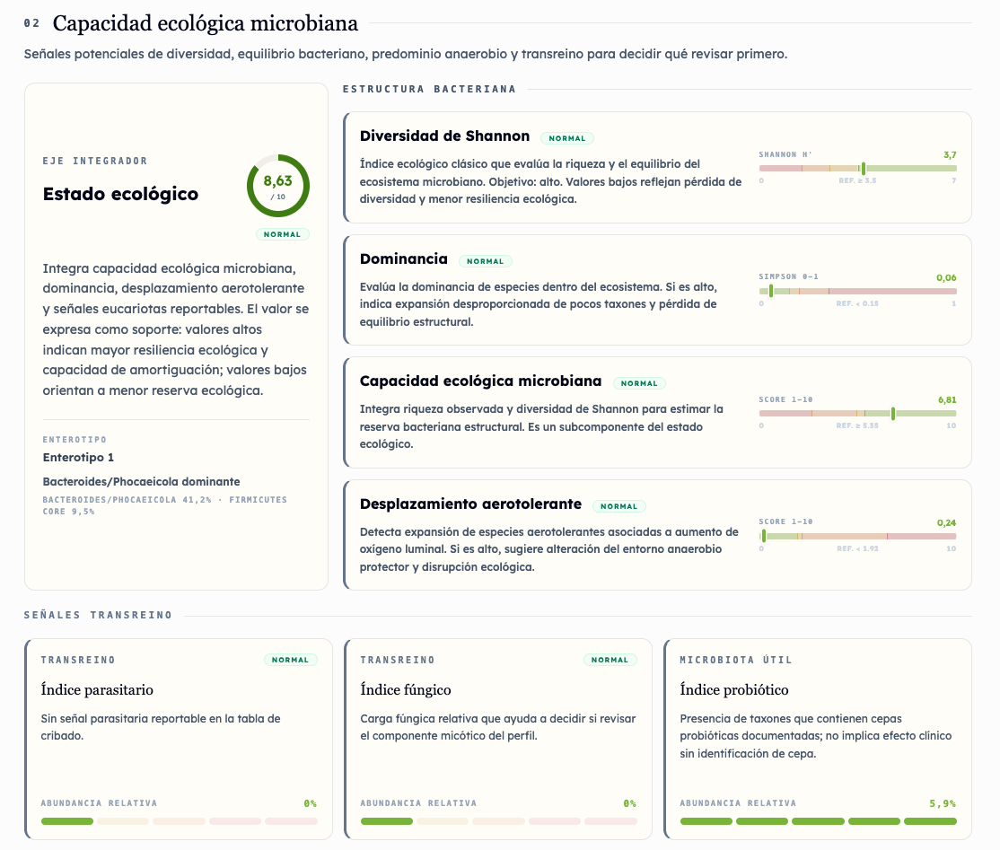
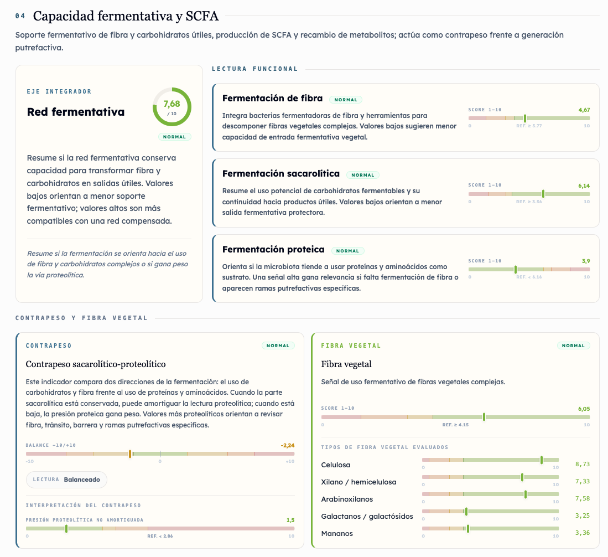
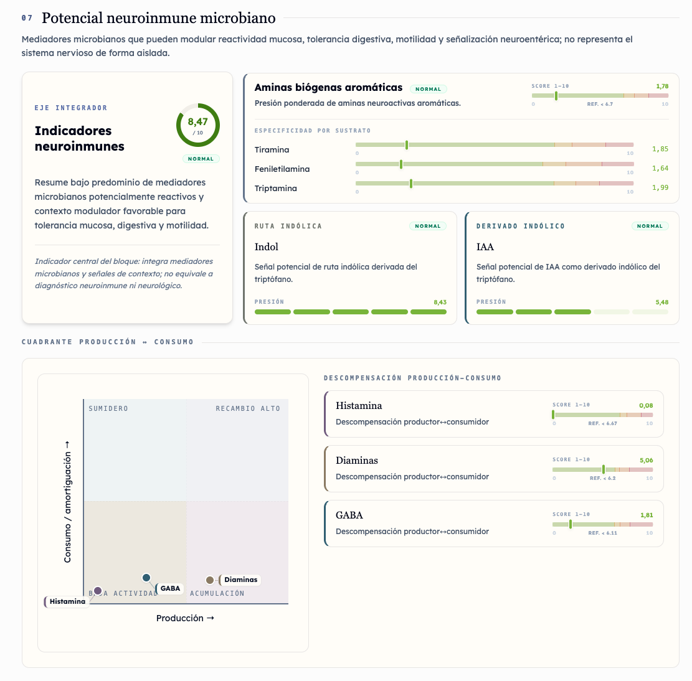

Nutricionistas y dietistas
Para orientar mejor alimentación, fibra, fermentación, síntomas digestivos y adherencia del paciente.
- Lectura funcional
- Recomendaciones nutricionales
- Seguimiento del paciente
Portal profesional · prescripción · seguimiento
AMBIOTA PRO ayuda a nutricionistas, médicos, PNIEs y clínicas a integrar el test metagenómico en consulta sin improvisar: cuándo recomendarlo, cómo explicarlo y cómo acompañar el resultado.
Casos por disciplina
Si soy nutricionista, médica, PNIE o trabajo en una clínica, necesito ver en segundos cómo esto encaja en mi forma real de pasar consulta.
Para orientar mejor alimentación, fibra, fermentación, síntomas digestivos y adherencia del paciente.
Para conectar microbiota, inflamación, barrera, metabolismo y ejes funcionales sin caer en promesas simples.
Para incorporar datos metagenómicos cuando el caso necesita más contexto y una explicación ordenada.
Para trabajar conversaciones específicas con criterios digestivos, metabólicos, barrera e inflamación.
Programa prescriptor
El profesional necesita sentir que AMBIOTA le ayuda a abrir una nueva conversación clínica: cuándo recomendarlo, cómo explicarlo, cómo acompañar al paciente y cómo ganar seguridad al interpretar.
El punto de partida
No quiero otro informe que impresione y luego me deje solo. Quiero una forma clara de leer, explicar y acompañar el resultado.
Un informe puede impresionar por volumen de datos y aún así dejar al profesional sin una ruta clara de lectura.
La microbiota genera interés, pero también confusión. El valor está en traducir hallazgos sin prometer de más.
Código, materiales, formación y una forma ordenada de explicar AMBIOTA sin trabajar solo.
Nos cuentas tu especialidad, cómo trabajas y si necesitas código, demo o reunión.
Entrada PROTe mostramos qué recibe el paciente, qué ve el profesional y cómo se puede explicar en consulta.
DemoCódigo, materiales, webinar de apoyo, pack clínica o circuito específico para tu equipo.
ActivaciónTe ayudamos a revisar dudas, mejorar la explicación al paciente y detectar cuándo necesitas más formación.
Soporte PRODe la recomendación al soporte
Desde que recomiendo el test hasta que reviso el resultado, necesito saber qué ocurre, qué recibe el paciente y dónde puedo apoyarme.
El profesional comparte su código o enlace y el paciente entiende por qué AMBIOTA puede aportar valor en su caso.
El paciente recibe instrucciones claras y AMBIOTA mantiene el proceso ordenado desde la muestra hasta el laboratorio.
El informe organiza bioindicadores, ecología y funciones para facilitar una conversación clínica útil.
El profesional puede apoyarse en materiales, formación y soporte para ganar seguridad en casos complejos.
Ecosistema AMBIOTA
Un sistema conectado para recomendar microbiota con más criterio, menos fricción y una red profesional detrás.

Academy funciona como capa de aprendizaje continuo: profesionales que comparten dudas, sesiones, casos y una forma común de interpretar microbiota con más criterio.
El valor no está solo en analizar más datos. Está en convertir la ciencia, el informe y el soporte en una experiencia útil para consulta.

Informe AMBIOTA
El informe tiene que ser útil en consulta: permite demostrar profundidad técnica, pero también orden, pedagogía y una explicación que el paciente pueda entender.

Un primer panel que ayuda a priorizar y abrir una conversación ordenada.

La microbiota como ecosistema, no como una lista aislada de microorganismos.

Conectar grupos funcionales con hipótesis nutricionales de forma prudente.

Un marco para interpretar, no para sustituir criterio clínico ni diagnóstico.
Tres formas de empezar
No todos empezamos igual: algunos necesitan un código, otros una demo, otros activar a todo un equipo o ganar seguridad con formación.
Para médicos, nutricionistas, PNIE, digestivo, ginecología, deporte o salud integrativa que quieren empezar a prescribir con criterio.
Propuesta para centros con volumen: reunión, materiales, formación breve, pack piloto y soporte para el equipo.
La Academy puede funcionar como capa de aprendizaje continuo para profesionales que quieren ganar seguridad interpretativa.
Comparativa prudente
La diferencia no es enseñar más datos, sino ayudarme a convertirlos en una conversación clínica prudente, útil y fácil de sostener.
Lectura amplia del ecosistema microbiano y resultados a nivel de especie cuando corresponde.
Organización por bioindicadores, ecología y funciones para que no todo dependa de una lista técnica.
Materiales, código profesional, webinars y apoyo para explicar el test con más seguridad.
No competir por ser el kit más barato, sino por ser la opción que mejor ayuda a decidir y explicar.
Preguntas profesionales
Antes de recomendar un test, necesito resolver lo básico: qué gano, cómo empiezo, qué explico y qué apoyo tendré después.
No necesitas trabajar solo. AMBIOTA PRO está pensado para darte informe estructurado, materiales de explicación, formación y soporte para que puedas ganar seguridad de forma progresiva.
Ganas una línea profesional de valor: un test avanzado, una conversación clínica más profunda, un código profesional y recursos para explicar mejor al paciente cuándo tiene sentido hacer el test.
La base tecnológica es la misma, pero el uso cambia por disciplina. Por eso la propuesta PRO debe adaptar casos, materiales y seguimiento según perfil profesional o centro.
Sí. La idea es permitir una entrada simple con código profesional y evolucionar hacia pack clínica, equipo o formación avanzada si hay volumen y recurrencia.
Acceso profesional
Cuéntanos tu perfil y te ayudaremos a escoger el siguiente paso: ver el informe, activar un código profesional, valorar un pack clínica o recibir materiales para consulta.